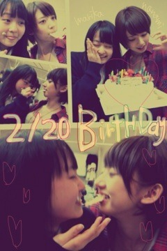
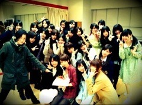

| 2012/02 21 Tue | 伊藤万理華 81回目*marika |
いつも読んでくださってる方、
初めて読んでくださった方、
コメントしてくださった方、
ありがとうございます♡
公式サイトがリニューアルしたので、
BloGを更新するのが遅くなりましたx(
昨日記事を書いたのですが、
これまたやり方間違えて
消えてしまったんです。
だーーーー!!!!
この機械オンチーーーうわーん
公式プロフィールの写真も変わりました:)いひ
そして、アンダーメンバーだけの番組。
『乃木坂って、ここ！』
が公式サイトでスタートしました。
選抜メンバーに負けないで、
アンダーメンバーの個性を出していきたいと思います‼
第1回はこの前のゲリラティッシュ配りです:D
ぜひ見てくださいっっ＊
＊昨日

19歳のななみ、16歳のまりか
*****HaPPy BirThDAy*****
2012.2.20♡ななみ、まりか
ななみ:D♡
お誕生日おめでとう♪
優しくてのほのほしてて
あっさりしてて、
あったかいお姉ちゃん^^*
だいすき♡♡♡
ぎゅーーーてしました＊
今度お泊りさせてね♡
昨日Lesson後、
ケーキを用意してくれました。
ケーキ争奪戦
いつも誕生日の子が先にひと口食べてから
みんなが食べるんですよ！
こりゃもう恒例 笑
でね、今回は
ななみとまりかがひと口食べて
「いいよ」て言ったらみんな食べようね
て約束したの。
みーんなケーキを囲んでて
フォーク片手にじーーーーと見るんです。
すごい迫力よ笑
2人がひと口食べた瞬間
みんなが
むっしゃむっしゃむっしゃむっしゃ
...°□° ‼
おいおいおいおいおーいちょっと‼
まだ「いいよ」て言ってないんやけどー‼
笑
楽しかった。
ぜひ、この光景をみなさんに見せたい。
メンバーみんなの笑顔が見れて幸せやった^^
乃木メン最高です。

んー乃木充♡♡♡♡♡
みんなだいすき‼
誕生日の一日早く家族がお祝いをしてくれました。
おいしかった ><ぺろり
パパ、ママ、お兄ちゃんありがとう:D
友達からも沢山のお祝いメールをもらいました。
そして、沢山のお祝いコメント
本当にありがとうございました。
乃木坂46に入って始めての誕生日!
こんなに沢山の方に祝っていただいたのは初めてで、
すごい感動してます。
乃木坂family
みなさん
家族
スタッフさん
メンバー
友達
私は幸せ者です。
最高の誕生日でした‼
☆☆☆
いよいよ明日、
2月22日 デビュー日です‼
乃木坂familyのみなさん、
ここまで待ってくださって
本当にありがとうございました。
みなさんが支えてくださったおかげで
ここまで来れたと思います。
ここからがスタートです。
上り坂で頑張ります‼
これからもずっと応援よろしくお願いします＊
☆☆☆
16歳 伊藤万理華
努力!感謝!笑顔!
:)
みなさんがだいすきです ♡
ベビたん*****bA by marika